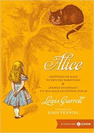
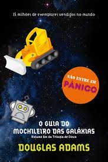

Estante de Livros
Sua Biblioteca está a um clique de distância
Harry Potter e a Pedra Filosofal

Sinopse:
Harry Potter nunca tinha ouvido falar em Hogwarts até o momento em que as CARTAS começam a aparecer no capacho do número 4 da rua dos Alfeneiros. Endereçadas com um LACRE PÚRPURA, elas são repidamente confiscadas por seus tios TERRÍVEIS. E então, no décimo primeiro aniversário de Harry, um homem GIGANTESCO com olhos luzindo como besouros negros chamado RÚBEO HAGRID entra intempestivamente com uma notícia ASSOMBROSA: Harry Potter é um bruxo e tem uma vaga na ESCOLA DE MAGIA E BRUXARIA DE HOGWARTS. Uma aventura inacreditável está para começar!
Fonte: Google Books
| 26 de Junho de 1997 |
J.K. Rowling |
Inglês |
Romance, Literatura infantil, Literatura fantástica, Alta fantasia |
Senhor dos Anéis: A sociedade do Anel

Sinopse:
A Sociedade do Anel O volume inicial de O Senhor dos Anéis, lançado originalmente em julho de 1954, foi o primeiro grande épico de fantasia moderno, conquistando milhões de leitores e se tornando o padrão de referência para todas as outras obras do gênero até hoje. A imaginação prodigiosa de J.R.R. Tolkien e seu conhecimento profundo das antigas mitologias da Europa permitiram que ele criasse um universo tão complexo e convincente quanto o mundo real. A Sociedade do Anel começa no Condado, a região rural do oeste da Terra-média onde vivem os diminutos e pacatos hobbits. Bilbo Bolseiro, um dos raros aventureiros desse povo, cujas peripécias foram contadas em O Hobbit, resolve ir embora do Condado e deixa sua considerável herança nas mãos de seu jovem parente Frodo. O mais importante legado de Bilbo é o anel mágico que costumava usar para se tornar invisível. No entanto, o mago Gandalf, companheiro de aventuras do velho hobbit, revela a Frodo que o objeto é o Um Anel, a raiz do poder demoníaco de Sauron, o Senhor Sombrio, que deseja escravizar todos os povos da Terra-média. A única maneira de eliminar a ameaça de Sauron é destruir o Um Anel nas entranhas da própria montanha de fogo onde foi forjado. A revelação faz com que Frodo e seus companheiros hobbits Sam, Merry e Pippin deixem a segurança do Condado e iniciem uma perigosa jornada rumo ao leste. Ao lado de representantes dos outros Povos Livres que resistem ao Senhor Sombrio, eles formam a Sociedade do Anel. Alguém uma vez disse que o mundo dos leitores de língua inglesa se divide entre os que já leram O Senhor dos Anéis e os que um dia lerão o livro. Com esta nova tradução da obra, o fascínio dessa aventura atemporal ficará ainda mais evidente para os leitores brasileiros, tanto os que já conhecem a saga como os que estão prestes a descobrir seu encanto.
Fonte: Google Books
| 28 de Julho de 1954 |
J.R.R. Tolkien |
Inglês |
Literatura Fantástica, Aventura, Alta fantasia |
Percy Jackson e o Ladrão de Raios

Sinopse:
Primeiro volume da saga Percy Jackson e os olimpianos, O ladrão de raios esteve entre os primeiros lugares na lista das séries mais vendidas do The New York Times. O autor conjuga lendas da mitologia grega com aventuras no século XXI. Nelas, os deuses do Olimpo continuam vivos, ainda se apaixonam por mortais e geram filhos metade deuses, metade humanos, como os heróis da Grécia antiga. Marcados pelo destino, eles dificilmente passam da adolescência. Poucos conseguem descobrir sua identidade. O garoto-problema Percy Jackson é um deles. Tem experiências estranhas em que deuses e monstros mitológicos parecem saltar das páginas dos livros direto para a sua vida. Pior que isso: algumas dessas criaturas estão bastante irritadas. Um artefato precioso foi roubado do Monte Olimpo e Percy é o principal suspeito. Para restaurar a paz, ele e seus amigos – jovens heróis modernos – terão de fazer mais do que capturar o verdadeiro ladrão: precisam elucidar uma traição mais ameaçadora que fúria dos deuses.
Fonte: Google Books
| 28 de Junho de 2005 |
Rick Riordan |
Inglês |
Literatura Infantil, Literatura Fantástica, Alta Fantasia |
Alice no Pais das Maravilhas

Sinopse:
Você poderia me dizer, por favor, qual caminho eu devo seguir a partir daqui?'
Que esta pergunta seja feita por uma garotinha perdida de casa (após ter seguido um coelho falante até sua toca) a uma espécie de gato fantasmagórico flutuante já não causa nenhuma estranheza quando chegamos na tal parte da história, pois como nos alertou a própria menina: 'há tanta coisa estranha acontecendo aqui que eu já não me surpreendo com mais nada'.
Com este conto surreal e fantástico, muitas vezes sem sentido algum, noutras vezes carregado de sentido oculto e profundo, Lewis Carroll revolucionou para sempre a literatura infantil, praticamente a refundando (não surpreende que encontremos algo do seu estilo em Antoine de Saint-Exupéry e Monteiro Lobato). É aqui que conheceremos célebres personagens como o Coelho Branco, o Chapeleiro Louco e o Gato de Cheshire. É aqui que veremos, quem sabe, a primeira descrição genuína dos sonhos infantis. É aqui que celebraremos toda a magia da boa literatura - esta que não morre nunca.
Incontáveis peças de teatro, filmes e livros secundários foram criados por conta desta obra preciosa, mas nada substituí ler o original; ainda mais quando se trata da tradução de um de nossos maiores escritores, Monteiro Lobato, numa edição recheada com as clássicas ilustrações de John Tenniel e Arthur Rackham. Bem-vindo ao País das Maravilhas!
Fonte: Google Books
| Novembro de 1865 |
Lewis Carroll |
Inglês |
Literatura Infantil, Literatura Fantástica |
O Guia do Mochileiro das Galáxias

Sinopse:
Considerado um dos maiores clássicos da literatura de ficção científica, O Guia do Mochileiro das Galáxias vem encantando gerações de leitores ao redor do mundo com seu humor afiado.
Este é o primeiro título da famosa série escrita por Douglas Adams, que conta as aventuras espaciais do inglês Arthur Dent e de seu amigo Ford Prefect.
A dupla escapa da destruição da Terra pegando carona numa nave alienígena, graças aos conhecimentos de Prefect, um E.T. que vivia disfarçado de ator desempregado enquanto fazia pesquisa de campo para a nova edição do Guia do Mochileiro das Galáxias, o melhor guia de viagens interplanetário.
Mestre da sátira, Douglas Adams cria personagens inesquecíveis e situações mirabolantes para debochar da burocracia, dos políticos, da "alta cultura" e de diversas instituições atuais. Seu livro, que trata em última instância da busca do sentido da vida, não só diverte como também faz pensar.
Fonte: Google Books
| 12 de outubro de 1979 |
Douglas Adams |
Inglês |
Ficção Ciêntifica, Romance, Humor |